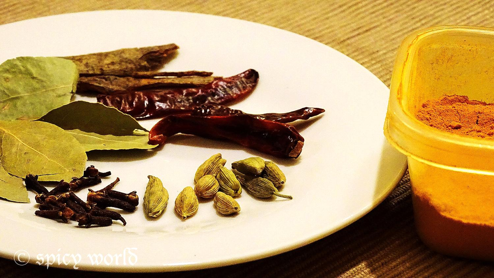
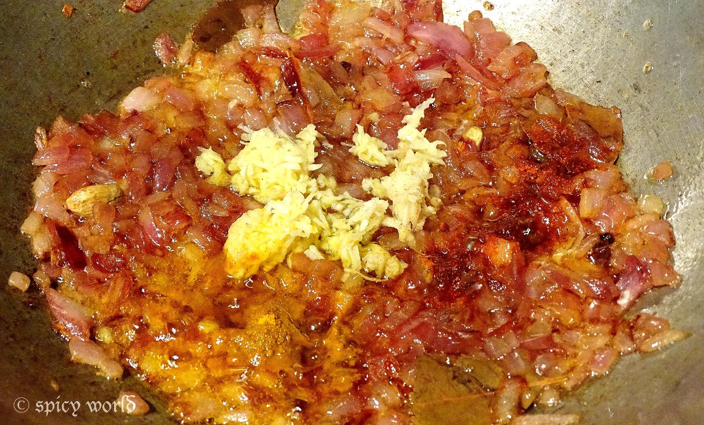
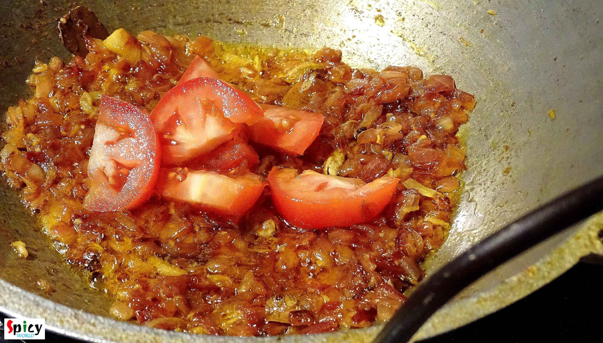
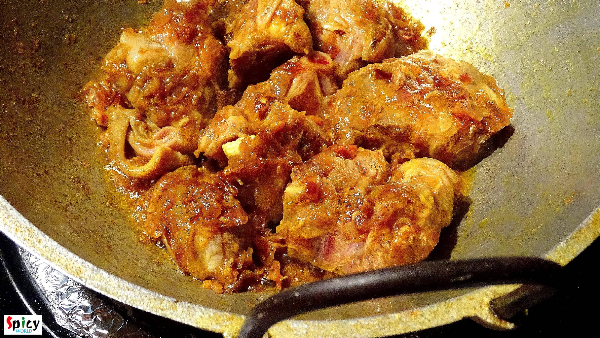
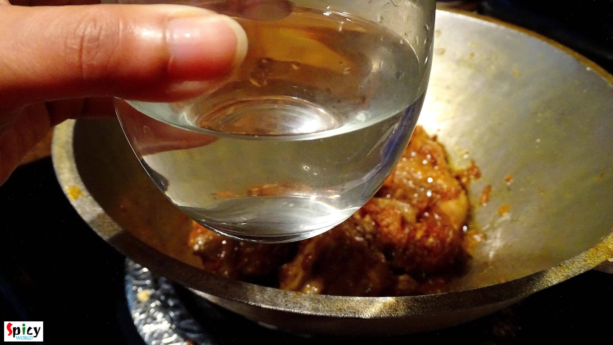
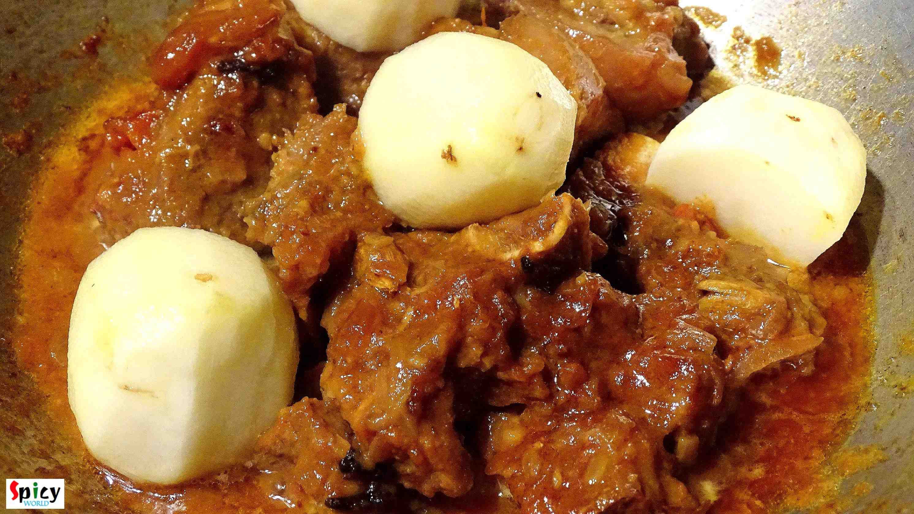
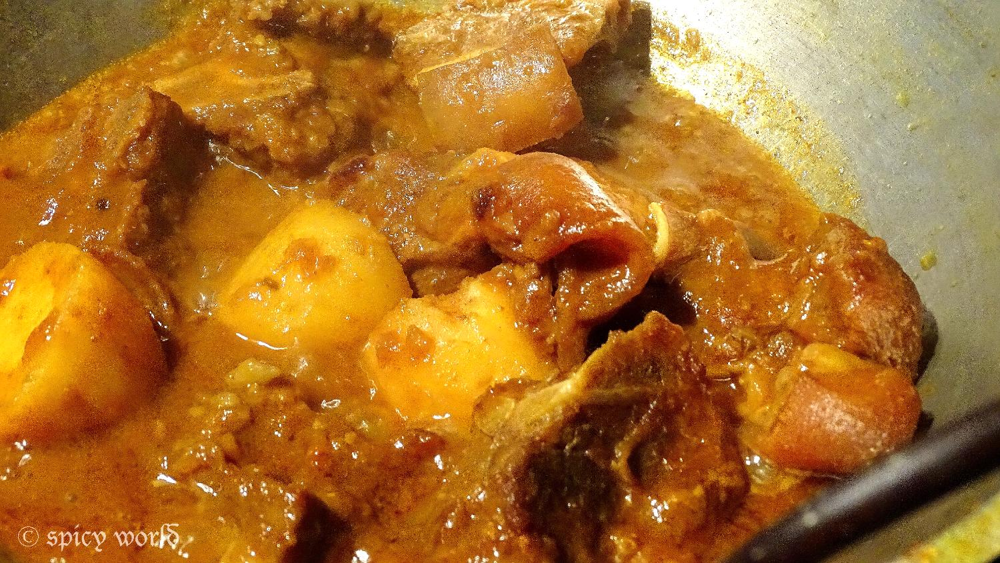

Mutton Kosha (Bengali style)
© 2016 Spicy World, Published on: 1½3/2015
I love to eat mutton in any preparation, but do you have any experience of 'mutton kosha'? I would love to know your story. Because this dish is one of the traditional Bengali curries. We slow cook the mutton in its own juices with gravy and spices, thats why the end result always becomes finger licking good. You can serve 'mutton kosha' along with 'steamed rice', mishti pulaao, 'luchi', 'porota' and 'plain roti'. Believe me every combo will make your lunch or dinner special everytime. Try this in your own kitchen and make your family haapy.
")
Ingredients
- Mutton 12-15 pieces.
- Potato 4 pieces.
- 1 big onion chopped.
- Ginger and garlic paste 2 Teaspoons.
- 1 small tomato chopped.
- Turmeric powder 2 Teaspoon.
- Red chili powder 1 Teaspoon.
- Whole spices (5 green cardamoms, 4 cloves, 1 dry red chilli, 1 small cinnamon stick, 1 bay leaf)
- 1 Teaspoon garam masala powder.
- 4 green chilies.
- Mustard oil 6 Teaspoon.
- Salt and sugar.
- Warm water.
")
Steps
Heat mustard oil in a kadai / pan.
Add 1 Teaspoon sugar and bay leaves in the hot oil and caramalize it.

Then add green cardamom, cloves, cinnamon stick and dry red chilli. Saute it for a minute.

Add chopped onion with pinch of salt. Fry this till golden brown.
Add turmeric powder and red chilli powder. Mix it.
Add ginger and garlic paste. Cook this for 2 minutes.

Then add chopped tomatoes. Cook this for 5 minutes.

When the oil starts separating, add the mutton and enough salt. Mix it very well for 15 minutes.

Then cook it in slow flame with lid for 20 minutes. Mutton will leave its own juice.
If the mutton becomes too dry, then add some warm water.

After 35 minutes add the potatoes and green chilies.

Cook it till the meat AND potatoes become very soft. It will take time. Only if you have less time to cook, you can use pressure cooker.
Mutton should have some very thick gravy (usually its a semi-dry preparation).

Your mutton kosha is ready.
- Serve this with hot plain rice, pulaao, naan ...
 (Final)")